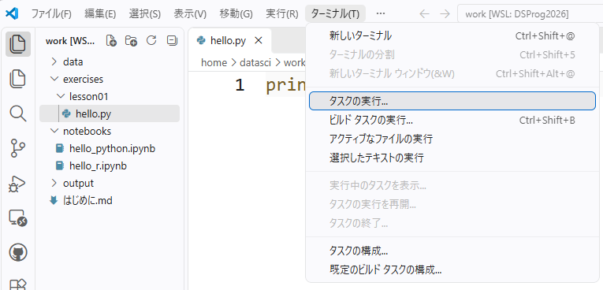
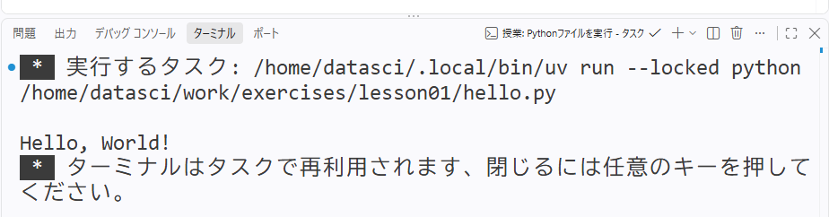

0〜5分｜今日の目標
DSプログラミング入門2026｜白濵 成希
出典：学生用ノート §1–2／第2回マニュアル §10
0〜5分｜共通の実行手順 1
Ctrl + S → 対象ファイルのタブ → ［ターミナル］→［タスクの実行…］

今日は.py／.Rをタスクで実行。Notebookはセル横の▶です。
画像はlesson01/hello.pyの例。今日はlesson03のファイルを選びます。
出典：学生用ノート §2／操作画像 12
0〜5分｜共通の実行手順 2
Python → ［授業: Pythonファイルを実行］
R → ［授業: Rファイルを実行］

画像はlesson01の出力例。上部のコマンドは入力不要です。「ターミナルはタスクで再利用…」はエラーではありません。
出典：学生用ノート §2／検証報告「実行環境とタスク」／操作画像 13–14
5〜15分｜まず予想する
| わかっていること | 値 |
|---|---|
| 単価 | 120円 |
| 個数 | 2個 |
合計はいくらになるでしょうか。
計算の仕方と答えを、紙か頭の中で予想します。
出典：学生用ノート §3
5〜15分｜変数・代入・関数の呼び出し
| 名前 | 表すもの |
|---|---|
price |
単価 |
quantity |
個数 |
total |
合計金額 |
=、Rの
<-。右の値を左の名前へ。* は掛け算。print()・cat()
は表示する関数。出典：学生用ノート §3
5〜15分｜照合 → 小さな変更
両言語の主例の結果：
合計は240円です120 × 2 = 240 と照合します。
次は、両言語で quantity だけを 2 → 3
に変更。
出典：学生用ノート §3／検証報告「各ケース」
5〜15分｜変更前後を比較する
| 個数 | 手計算 | 両言語の合計 |
|---|---|---|
| 2 | 120 × 2 | 240円 |
| 3 | 120 × 3 | 360円 |
値を変えた後、掛け算と表示も最初から実行しました。
確認できたら、個数を2へ戻して保存します。
出典：学生用ノート §3／検証報告「各ケース」
15〜30分｜元データと予想
教材用の架空データです。
| 記録 | 学習時間（分） | 時間単位では？ |
|---|---|---|
| A | 15 | 予想する |
| B | 30 | 予想する |
| C | 45 | 予想する |
| D | 60 | 予想する |
60分 = 1時間。各値を何で割ればよいでしょうか。
出典：学生用ノート §4
15〜30分｜Pythonの実行結果
合計は240円です
[15 30 45 60]
[0.25 0.5 0.75 1. ]出典：学生用ノート §4／検証報告「各ケース」
15〜30分｜Pythonの行を読み直す
| コードの箇所 | 今日の役割 |
|---|---|
import numpy as np |
NumPyを短い名前で使う |
np.array(...) |
計算しやすい数値の配列を作る |
study_minutes / 60 |
一つひとつの値を60で割る |
元データ → 換算 → 表示の場所を、コードで指してください。
出典：学生用ノート §4
30〜45分｜Rの実行結果
合計は240円です
[1] 15 30 45 60
[1] 0.25 0.50 0.75 1.000.25、0.5、0.75、1 を、予想・Pythonの結果と照合。
先頭の [1]
は「この行の先頭は第1要素」という表示です。
出典：学生用ノート §4／検証報告「各ケース」
30〜45分｜PythonとRの対応
| したいこと | Python | R |
|---|---|---|
| 数値をまとめる | np.array(...) |
c(...) |
| 名前を付ける | = |
<- |
| 時間に換算する | study_minutes / 60 |
study_minutes / 60 |
| 結果を見る | print(...) |
print(...) |
同じ問い・同じデータ・同じ割り算です。
出典：学生用ノート §4
30〜45分｜ここまでの確認
「どの値を、何で割ったか」を隣の人に一言で説明。
出典：学生用ノート §3–4／教員用メモ §4
45〜60分｜一行は一つの記録
すべて教材用の架空データです。
| id | study_minutes | quiz_score |
|---|---|---|
| A | 15 | 40 |
| B | 30 | 60 |
| C | 45 | 80 |
| D | 60 | 70 |
4行・3列。学習時間は分、得点は点。
横の一行は一つの記録、縦の一列は一種類の情報です。
出典：学生用ノート §5
45〜60分｜表と数値を照合
| 確かめるもの | 両言語で確認する内容 |
|---|---|
| 表の行・列 | A〜Dの4行、3列 |
| 学習時間 | 15、30、45、60 |
| 得点 | 40、60、80、70 |
| 学習時間の平均 | 37.5分 |
空白・行ラベル・型の表示ではなく、データと数値を比べます。
出典：学生用ノート §5／検証報告「各ケース」
60〜78分｜演習を始める
同じ exercises/lesson03/ の中に保存します。
| 主例を残す | 複製して作る演習ファイル |
|---|---|
lesson03.py |
exercise03.py |
lesson03.R |
exercise03.R |
PythonとRの両方で変更・実行し、両方を提出します。
出典：学生用ノート §6
60〜78分｜この画面で予想・作業
quiz_score
列を取り出して表示する行を追加。| 確かめること | 予想 | Python | R |
|---|---|---|---|
| 最初の値は何時間？ | |||
| 表のAは何分？ | |||
| 平均は何分？ |
予想してから、保存・実行・照合しましょう。
出典：学生用ノート §6
60〜78分｜必要なときだけ見る
学習時間の一列だけを表示している行はどこですか。
その行の列名を、表にある得点の列名へ変えると？
Copilotへ聞く場合も、教員に聞く場合も同じ入口です。
学習時間の列の例を参考に、得点の列も表示したいです。完成コードを先に出さず、変更箇所を見つけるヒントを一つください。
出典：学生用ノート §6／教員用メモ §7
60〜78分｜提出前の実行確認
| 保存して選ぶタブ | 実行する授業タスク |
|---|---|
exercise03.py |
授業: Pythonファイルを実行 |
exercise03.R |
授業: Rファイルを実行 |
出典：学生用ノート §6
78〜85分｜結果を照合する
| 確かめたもの | Python・Rの結果 |
|---|---|
| 時間単位の数値列 | 0.5、0.5、0.75、1 |
| 表のAの学習時間 | 30分 |
| 学習時間の平均 | 41.25分 |
| 得点の列 | 40、60、80、70のまま |
変えたのは学習時間。得点は変えていません。
出典：教員用メモ §5／検証報告「各ケース」
78〜85分｜確認方法を共有する
| 確認の方法 | 自分がしたことの例 |
|---|---|
| 手計算 | 学習時間の合計を4で割った |
| 元データとの照合 | 表のAとBの先頭の値を比べた |
| 変更前後の比較 | 学習時間は変わり、得点は同じだった |
実際に行った確認を一つ、隣の人に説明しましょう。
出典：学生用ノート §6／教員用メモ §7
78〜85分｜先に問いだけを見る
quantity
を2から3へ変えて最初から実行すると、合計はいくら？quiz_score
列を取り出すと、何個の、どんな値が出る？ここは数分だけ、Copilotの提案を使わずに考えます。
出典：学生用ノート §7
78〜85分｜答え合わせ
| 問い | 答え | 確かめるところ |
|---|---|---|
| 1：個数3 | 360円 | 120 × 3を再計算 |
| 2：30分 | 0.5時間 | 30 ÷ 60 |
| 3：得点列 | 4個 | 40、60、80、70 |
正解したかだけでなく、どのデータ・計算を見たかも確認。
出典：教員用メモ §5
85〜90分｜保存してから貼り付ける
授業で案内するフォームの、別々の段落欄へ貼ります。
| 回答欄 | コピーするもの |
|---|---|
| Pythonプログラム全文 | 保存した exercise03.py 全体 |
| Rプログラム全文 | 保存した exercise03.R 全体 |
コード欄で Ctrl + A → Ctrl + C。A・B・Cをすべて含めます。
出典：学生用ノート §6「Google Formsで提出する」
85〜90分｜送信前に確認する
未完でも、両欄に取り組んだコードを貼ります。
出典：学生用ノート §6「Google Formsで提出する」
85〜90分｜提出と保存を確かめる
まだ難しいところが、次の練習場所です。
次回：今日のような表から、平均などの要約とグラフで特徴を見る。
出典：学生用ノート §8
85〜90分｜提出中の支援・終了確認
どの言語・どのファイル・どの段階で止まりましたか。
出典：学生用ノート §2・6・8／教員用メモ §4・6
時間外の参照｜必要な箇所だけ
| 困ったとき | 最初に確かめること |
|---|---|
| 値を変えたのに同じ結果 | 保存したか、演習ファイルを選んだか |
| 授業用タスクが出ない | work全体を開いているか |
| 最初からエラーになる | 囲み記号や全角の引用符が混ざっていないか |
| 得点列を取り出せない | 列名のつづり、引用符・角括弧・ドル記号 |
一度に直すのは一箇所。エラー文と該当行を一緒に確認。
出典：学生用ノート §2・6／教員用メモ §6
時間外の参照｜保存・終了・次回の起動
出典：学生用ノート §2／第2回マニュアル §9／教員用メモ §9